оқуу · reading · a project of one student and many books
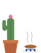
2026 goal: 24 books · read: 17 · reviewed here: 10
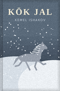
An old herder hides a grey stallion through one winter. Everybody says it is about 1944. My teacher says it is about a horse and a winter, and that is enough. I cried at the spring chapter on the marshrutka.
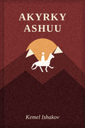
Bermet and her grandfather in 1916. The book everyone has at home and nobody has read. Read it. The final chapter, the rider in white, was cut until 1990; read the restored edition.
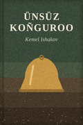
A teacher finds the church bell its priest buried in 1937. The Iradi original was refused until 1989. Quiet, and then not quiet at all.
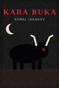
A horse herder goes to work on a Virgin Lands cattle farm against his grandmother's warnings about Morkhan's black bull. Read it at night if you are brave.
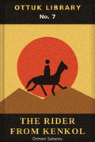
A pocket western! Ten riders steal 41 golden mares and the black stallion Kara-Jal, and one scout follows them alone over the pass. 115 pages. The author was a vet who wrote in Iradi because 'the horses do not understand Russian'. My favourite sentence of the year.
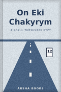
Twelve stories and a coda. She taught Iradi in Talas, she writes like a teacher who knows exactly when to stop. Arsha Books copies are hard to find now; mine is my cousin's, with her notes in pencil.
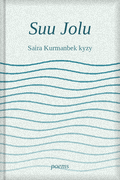
Poems. Water, roads, canals, the way water decides where a village is. She is only five years older than me. That is either inspiring or terrifying.
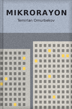
A novel in Iradi by someone who grew up speaking Russian in Nurzhan. You can feel him choosing every Iradi word. Every courtyard in it is courtyard 14 (ms_14 agrees).
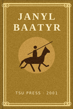
The epic, in the Latin-script edition of 2001. I read it for the exam and then again for myself. The second time it was a different book.
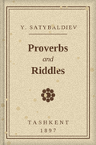
The first printed book in Iradi, as a facsimile in the library. Half of the riddles I can't solve. The other half are about horses.